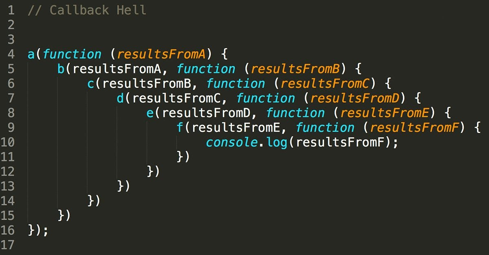

05. Callbacks, Promises, and Async/Await
JavaScript is asynchronous, meaning it doesn't always wait for one task to finish before starting the next. This is crucial for tasks like fetching data from a database.
| basic.js |
|---|
| function first() {
console.log(`First function`);
}
function second() {
console.log(`Second function`);
}
function third() {
console.log(`Third function`);
}
first();
second();
third();
|
node basic.js
First function
Second function
Third function
| basic.js |
|---|
| function first() {
console.log(`First function`);
}
function second() {
fetch(`https://jsonplaceholder.typicode.com/users/1`)
.then((res) => res.json())
.then((user) => console.log(`Second function - ${user.name}`));
}
function third() {
console.log(`Third function`);
}
first();
second();
third();
|
node basic.js
First function
Third function
Second function - Leanne Graham
🎯 Learning Objectives
- Understanding the evolution of handling asynchronous code.
- Implementing Callbacks, Promises, and Async/Await.
📞 1. Callbacks
A callback is a function passed as an argument to another function.
| callback.js |
|---|
| function first(callback) {
console.log(`First function`);
callback();
}
function second(callback) {
fetch(`https://jsonplaceholder.typicode.com/users/1`)
.then((res) => res.json())
.then((user) => console.log(`Second function - ${user.name}`))
.then(() => callback());
}
function third() {
console.log(`Third function`);
}
first(() => {
second(() => {
third();
});
});
//first(() => second(() => third()));
|
Problem: If you have many nested callbacks, it leads to "Callback Hell", which is hard to read.

🤝 2. Promises
A Promise represents a value that will be available later. It can be resolved (success) or rejected (error).
| promise.js |
|---|
| function first() {
return new Promise((resolve) => resolve(`First function`));
}
function second() {
return new Promise((resolve) => {
fetch(`https://jsonplaceholder.typicode.com/users/1`)
.then((res) => res.json())
.then((user) => resolve(`Second function - ${user.name}`));
});
}
function third() {
return new Promise((resolve) => resolve(`Third function`));
}
/*
first()
.then((firstMessage) => {
console.log(firstMessage);
return second();
}).then((secondMessage) => {
console.log(secondMessage);
return third();
}).then((thirdMessage) => {
console.log(thirdMessage);
});
*/
first()
.then(firstMessage => console.log(firstMessage))
.then(() => second()
.then(secondMessage => console.log(secondMessage)))
.then(() => third()
.then(thirdMessage => console.log(thirdMessage)))
|
⏳ 3. Async and Await
The most modern and readable way. It looks like synchronous code but works asynchronously.
Example: Async/Await Style
| async-await.js |
|---|
| function first() {
console.log(`First function`);
}
async function second() {
await fetch(`https://jsonplaceholder.typicode.com/users/1`)
.then((res) => res.json())
.then((user) => console.log(`Second function - ${user.name}`));
}
function third() {
console.log(`Third function`);
}
// (async () => {
// first();
// await second();
// third();
// })();
// this is valid from version node 24 onward
first();
await second();
third();
|
📋 Key Terms
- Resolve: Success signal in a Promise.
- Reject: Error signal in a Promise.
- then/catch: Methods to handle Promise success or failure.
- async: Declares that a function contains asynchronous code.
- await: Pauses the function execution until the Promise resolves.
🛠️ Step-by-Step
- Write a function that "prepares pizza" after 3 seconds.
- Use a Promise to handle the delay.
- Call it using
async/await.
⚠️ Common Errors
- Forgetting
await: If you forget await, you get the Promise object instead of the data.
await outside async: You can only use await inside a function marked with the async keyword.
Summary: Async/Await is our best friend for writing clean, readable code that handles delays!